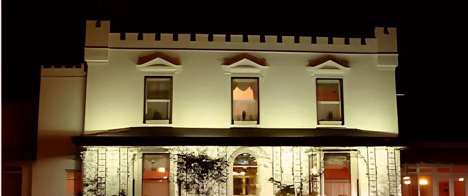
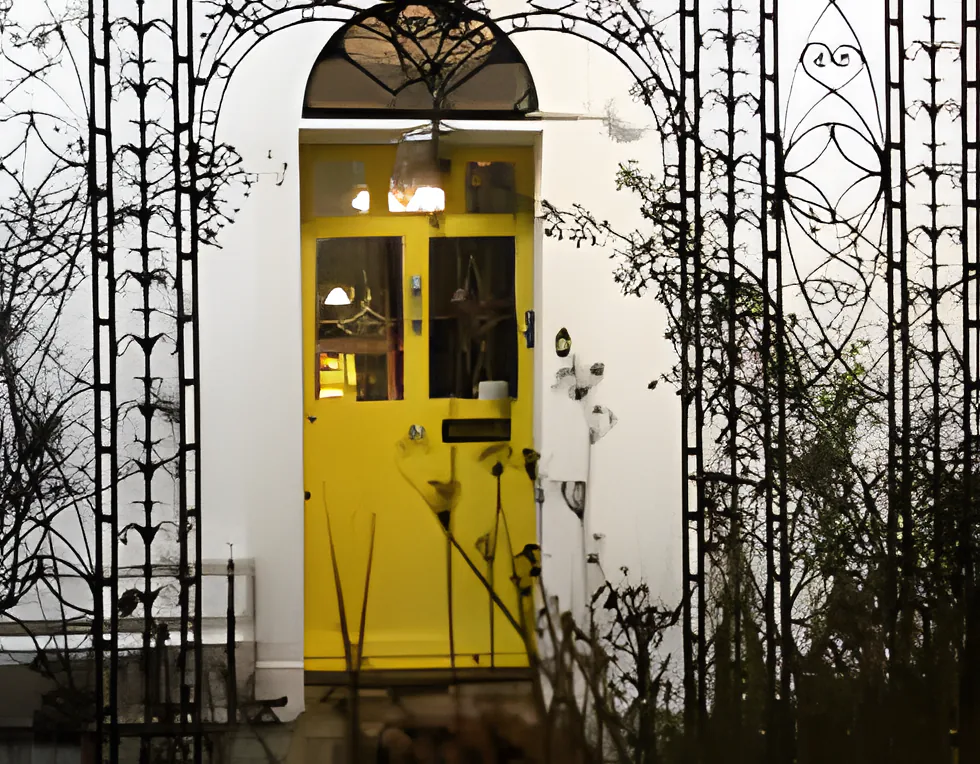
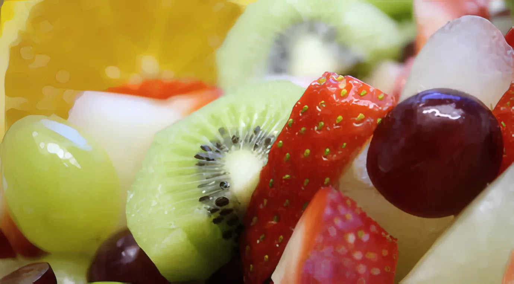
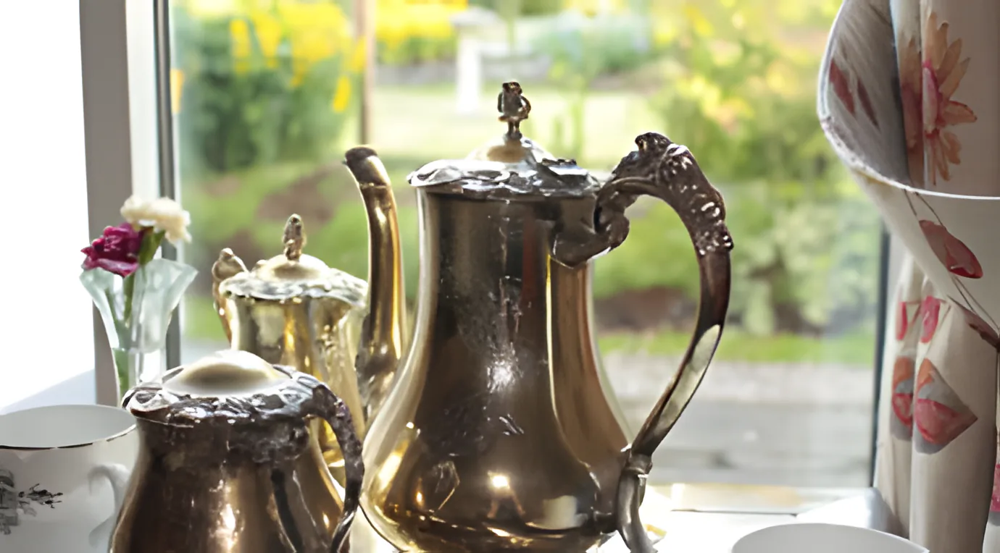
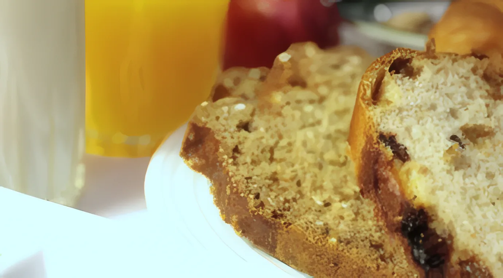
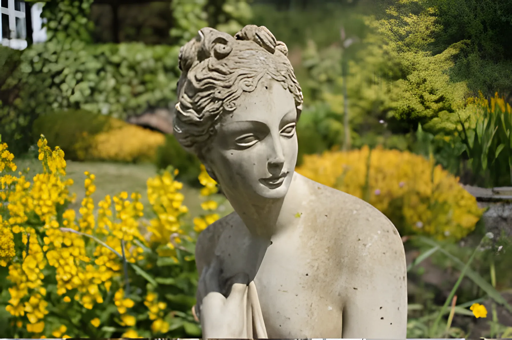
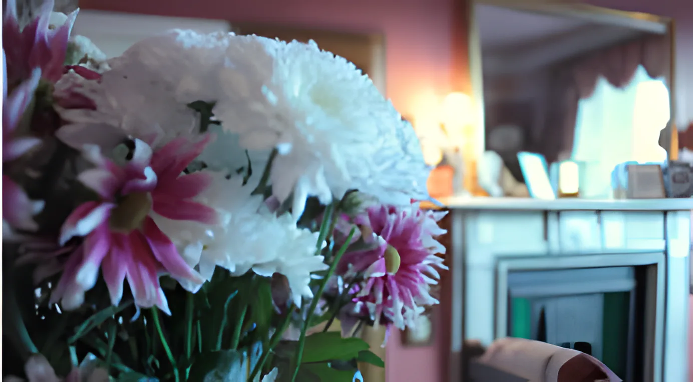
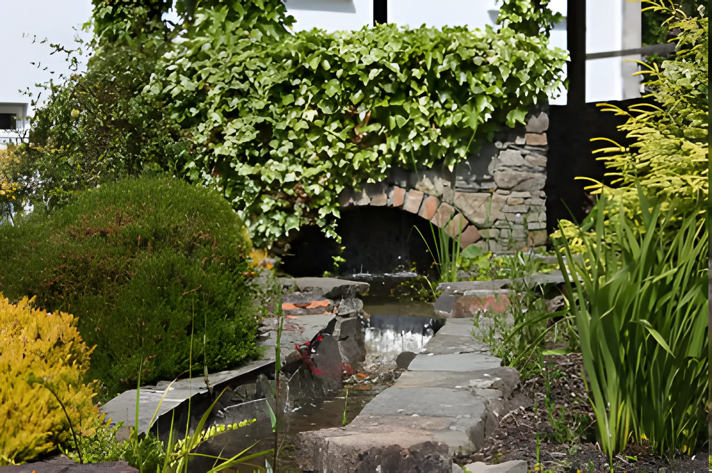
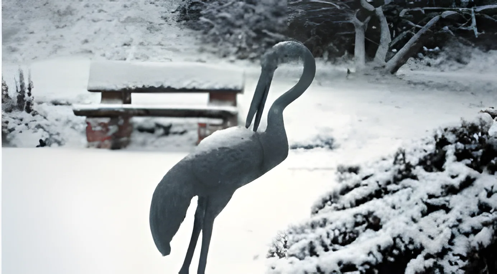
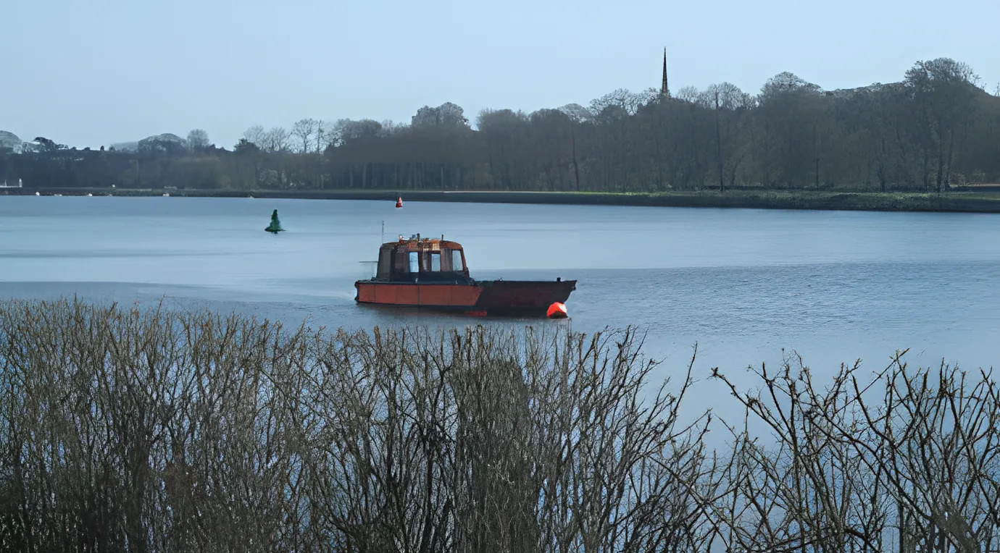

Belvedere a guesthouse in its own garden, at Tivoli, CorkLodge

Bed & breakfast
Tivoli, Cork City, Ireland
Private parking for every guest
Since Tim and Marie McGrath first opened the doors, every guest has been offered a drink on arrival, with something warm and delicious from the oven. Then the city, the coast and the whole south-west are on your doorstep.

The house
A guesthouse in Cork City, set in its own quiet gardens with cascades, ponds and a gazebo.
It's an easy base for the city and for the whole south-west. We sit between the Wild Atlantic Way and Ireland's Ancient East, close to the Silver Springs Moran Hotel and handy for Little Island and Fota. The harbour town of Cobh is 10 or 15 minutes away.
Most of our rooms either overlook the garden or open straight onto it, and there's ample private parking for all our guests' cars.
- Rooms
- Single, double and triple, all en-suite. Family rooms on request.
- Breakfast
- Cooked to order every morning
- In the room
- Free Wi-Fi, tea and coffee, complimentary DVDs
- Parking
- Private and secure, on the grounds
Rooms
Spacious rooms with generous bathrooms and complimentary toiletries. Sometimes you want to go out exploring, and sometimes you just want to stay in and relax, so there are DVDs to borrow for the evening.
- Free Wi-Fi
- Tea & coffee
- Trouser press
- Generous bathrooms
- Complimentary toiletries
- Complimentary DVDs
Breakfast
So many choices, you'll wake every morning to a very delicious dilemma.
A quality Irish breakfast cooked to order, or fresh free-range scrambled eggs with swirls of smoked Irish salmon. Vincent McGrath heads up the kitchen, and much of the credit goes to the local producers who supply us.



Fruit, the silver on the window sill, and bread from our own oven.
The garden
Cascades, ponds and a gazebo, right outside the rooms. It's the quiet part of a stay in the city: a cup of tea on the way in, a walk round before breakfast.




Cork, from our door
Cork has so much to offer, and we love showing it off. Guests who stay more than a day or two often say it's a city that grows on you. We've written 3, 5 and 7-day plans, guides in Italian and Polish, and a list of things for kids. Ask at breakfast: we're always happy to help plan your evenings, with suggestions and reservations.

- 01
Cobh
10–15 minThe harbour town that was Queenstown. The Heritage Centre tells "The Queenstown Story", the Titanic and the Lusitania.
- 02
Fota House & Wildlife Park
5 min from CobhA Regency house with world-renowned gardens and a tearoom; giraffes, cheetahs and flamingos next door.
- 03
Shandon & the English Market
Cork CityRing your own tune on the Shandon Bells, then coffee or lunch among the market stalls.
- 04
Blarney Castle
8 km from the cityKiss the stone in the battlements, then a picnic in the parkland and gardens.
- 05
Jameson Distillery, Midleton
10 min from FotaA tour through the making of whiskey, with a glass at the end. It could turn into a late night.
- 06
Kinsale
Half an hourCharles Fort, small galleries and curious shops, and seafood in the culinary capital of Ireland.
- 07
Killarney & the Ring of Kerry
90 minLeave after breakfast and you can start the Ring by ten, and still be back in Cork for dinner.
Find us
Belvedere Lodge, Tivoli, Cork City, Ireland
Close to the Silver Springs Moran Hotel, on the side of the city for Little Island, Fota and Cobh. Hiring a car? You can pick one up at Cork Airport or in the city centre.
- Phone
- 021 450 1682
- From abroad
- +353 21 450 1682
- Parking
- Private, on the grounds
Tivoli · Cork City
- Cobh10–15 min
- KinsaleHalf an hour
- Blarney8 km from the city
- Killarney90 min